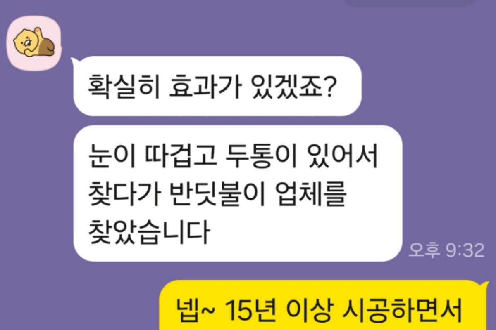
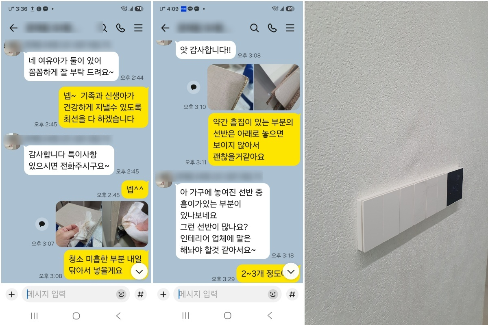

입주 후 새집증후군 / 올수리 아파트베이크아웃 후에도 두통과 눈 따가움이 남았던 입주 후 새집증후군 시공 사례
- 요약
- 베이크아웃을 일주일 정도 진행했지만 두통과 눈 따가움 같은 불편감이 남아 상담을 요청하셨고, 시공 후 고객 체감 만족도가 높았던 입주 후 새집증후군 시공 사례입니다.
- 시공 포인트
- 새 가구와 필름지, 바닥재 및 올수리한 실내 공간 전체를 현장 상태에 맞춰 관리했습니다.
Construction cases
실제 현장 중심으로 정리한 대표 시공사례입니다.

입주 후 새집증후군 / 올수리 아파트
아이 있는 집